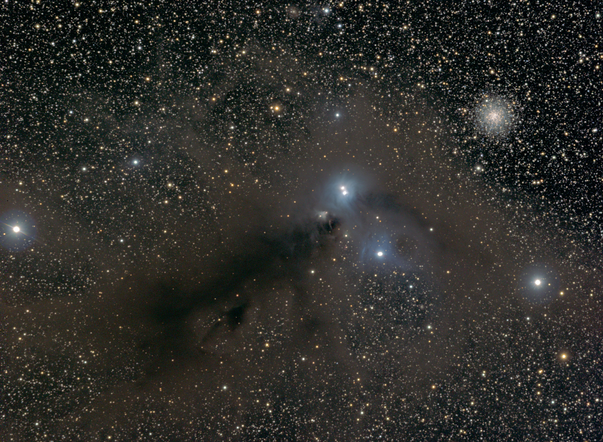

I got out for two observing sessions around the peak of the Perseid Meteor Shower. The first, a relatively short session on Wednesday, the second was a longer session on Saturday night.
Wednesday Night
On Wednesday, I was up on Mauna Loa to do some work on a project hosted at the NOAA Mauna Loa Observatory and I finished up shortly after sunset before it was fully dark. The clouds were right at the level of the observatory so I was in and out of them while I was finishing up. I hopped in the car, drove down the road, and emerged from the clouds (which were dissipating anyway) after a few miles. I pulled over and set up at the "Wind Sock" pullout along the road.
I set up a camera to try to catch some Perseid meteors even though the peak of meteor showers typically doesn't start until after local midnight. While I did set up the telescope for a bit of viewing, I spent most of my time just doing some naked eye stargazing and enjoying the night. With work the next morning, I only stayed a couple of hours.
It's prime time for one of my favorite objects in the sky: R Coronae Australis (R CrA). It is in the south, at a declination of -37 degrees, but from Hawaii it gets high enough to enjoy. Located below the teapot of Sagittarius, Coronae Australis is a C-shaped constellation of moderately bright stars. The R CrA complex is a group of objects composed of NGC 6723, 6726, 6727, and 6729. The first of these (NGC 6723) is a globular cluster, small in comparison to the great clusters, but still a nice view in my 152mm refractor. The other three (NGC 6726, 6727, and 6729) are all reflection nebula which are part of the same star forming cloud. The NGC 6726 and 6727 reflection nebulae are brighter, easily detectable in the eyepiece, and slightly blueish (dramatically blue in photographs). The smaller NGC 6729 is fainter, but triangular shaped with two stars embedded in it. One of those stars (at the apex of the triangle) is a very young protostar whose outflows have carved the cavity in the cloud which is now illuminated by the star. This is R CrA itself and it is one of the youngest stars you can see with your eye in an eyepiece.
I imaged this region back in July of 2007 and it is one of my favorite astrophotos that I've taken:

The R Coronae Australis region. Imaged with an SBIG ST-2000XM CCD on a Stellarvue SV102ABV refractor at f/6.4.
I hit a few more highlight objects of the Milky Way that night, but I also managed to catch Comet NEOWISE one more time. It is no longer visible to the naked eye. I tried quite hard as it should have been at the edge of detectability with an estimated magnitude of 6.5-7, but it was close to the Zodiacal Light, so that may have impacted my ability to see it. I did of course see it in binoculars and in the telescope. The telescopic view lacked the starlike core and big expansive tail which was visible back in July.
While I thoroughly enjoyed the naked eye views of the Milky Way, I did not see many Perseid meteors this night. Perhaps the problem was splitting my time between the camera (taking a time lapse), the telescope, and naked eye viewing, but I saw only a handful of faint meteors, some of which were not Perseids (evidenced by their direction of travel not lining up with the radiant).
The time lapse was marred by more flare activity at the Pohakuloa military base which brightened the sky background periodically. While there were many satellite streaks in the time lapse, there were few meteors. I was pointing fairly low on the horizon to get Maunakea in the image, so perhaps that impacted the meteor count.
Saturday Night
I observed again on Saturday, this time it was a trip dedicated to observing rather than a chance opportunity like Wednesday night.
I met up with two other astronomers at a large pullout lower down on Mauna Loa than the "Wind Sock" area from Wednesday. As is the norm nowadays, we set up a modest, socially distant way apart from each other, but it was nice to have other observers to chat with.
The conditions were near perfect. Being lower down, it was warmer and there was very little wind. There were some clouds threatening early, both high cirrus, and low ground fog creeping up from the Hilo side of the saddle, but both dissipated as it got fully dark. Better yet, the seeing was excellent. The sharpness of the views of Jupiter, Saturn, and Mars were stunning.
I started the night going through a set of deep sky objects described in this month's Astronomy magazine. The faintest ones were a real challenge in my 152mm refractor. I didn't quite finish the list as the exclamations from the others about the seeing on Jupiter and Saturn convinced me to cut DSO viewing short and go look at the planets. It was worth it.
I was not perfectly set up for planetary viewing. While my refractor performs spectacularly, I was observing on an un-motorized alt-az mount (a Rowan AZ-100). Its slow motion controls made planetary viewing at high power feasible, but a tracking mount would have let me push the power even higher. I maxed out at 240x using a Pentax 5XW eyepiece. The next step would have been a 2-4mm Nagler Zoom, but the combination of higher power and smaller apparent field of view of that eyepiece would have meant that the planet was in the field only briefly before needing a tweak with the slow motion controls. I'm considering motorizing this mount and this was another reason to push me to undertake that project.
In between periodic visits to Jupiter and Saturn, I hit a few objects which benefit from good seeing. Mostly small planetary nebulae like the Saturn Nebula and the Cat's Eye.
I packed up at about 1:30am. I wanted to stay until Mars was nice and high for viewing. Mars was lovely. It is still my favorite planet to view and I'm looking forward to opposition. The planet is now getting quite large, it was 16.6 arcseconds on Saturday night. I could easily see the polar ice cap, the gibbous phase, and a plethora of dark markings on the surface. I love the subtle detail that gets revealed by a long look at Mars in the eyepiece.
I'd set up my camera on a tracking mount similar to Wednesday night. This time I spent most of the time aimed at the Winter Milky Way, West of the radiant which was still rising, to try to catch some Perseids. As before, the number of satellite trails far outstripped the meteors. I'm not sure there's enough meteors in the sequence to make a nice composite image, but I'm going to try. That'll take some time to process, so I'll have to try to put that together in the coming weeks.